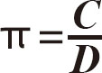
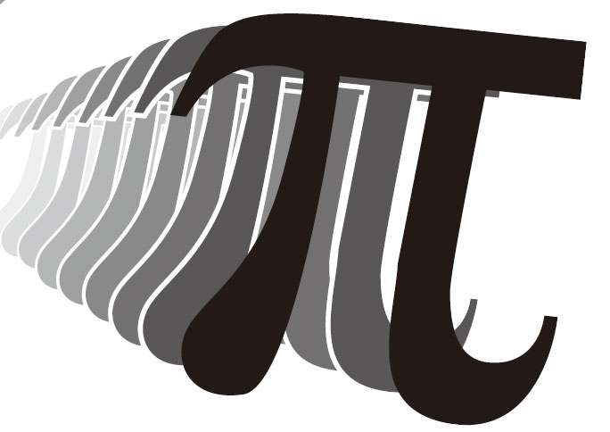
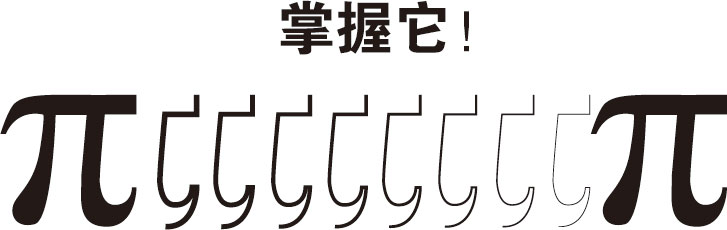
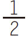
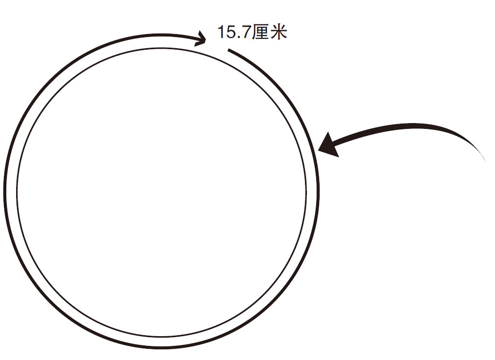

π表示数字3.141 5……（它将永远持续下去！）。圆周率π是圆的周长与直径的比值。
π表示数字3.141 5……（它将永远持续下去！）。圆周率π是圆的周长与直径的比值。
π表示数字3.141 5……（它将永远持续下去！）。圆周率π是圆的周长与直径的比值。

（圆周率＝周长/直径）


如果你知道一个圆的直径，你可以用圆周率公式计算圆的周长。
2R ＝D
（2倍半径＝直径）
2 R π ＝D π
（2倍半径乘以圆周率＝直径乘以圆周率）
C ＝D π
（周长＝直径乘以圆周率）

如果知道圆的半径，就可以确定圆的周长

如果知道圆的半径，就可以确定圆的周长。半径是直径的

。二倍半径乘以圆周率就是周长
如果知道圆的周长，就可以用圆周率来计算它的直径或半径